Início · Catálogo
Vinte e quatro materiais em linha.
Retalhos e saldos classificados por artigo e por tamanho, além de meia malha PV em rolo, resíduo de limpeza e tiras de rama. Tamanho P de 40 cm a 1 m e tamanho G a partir de 1 m. Varejo a partir de 5 kg e atacado a partir de 30 kg por material.
24 materiais

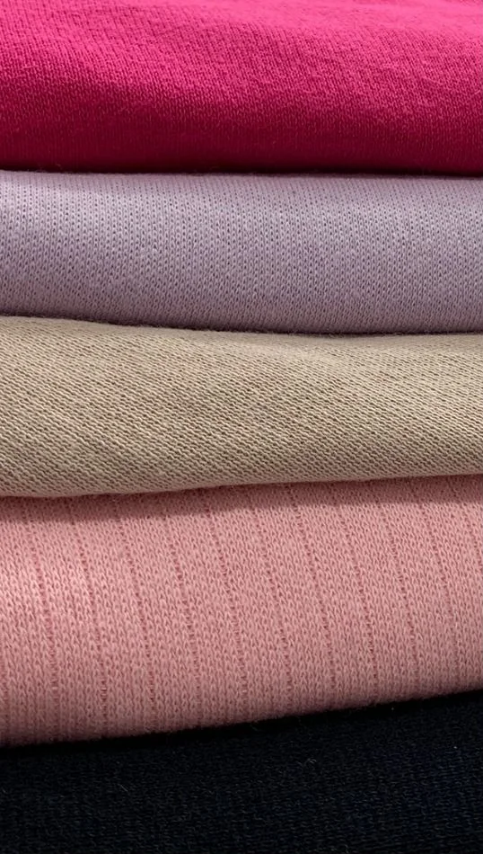
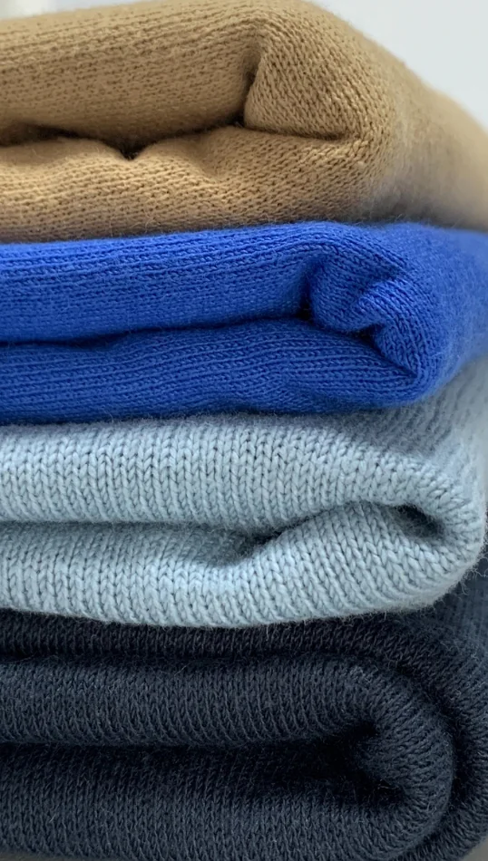

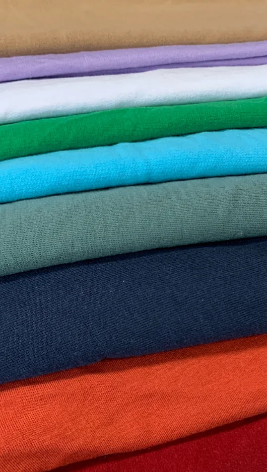
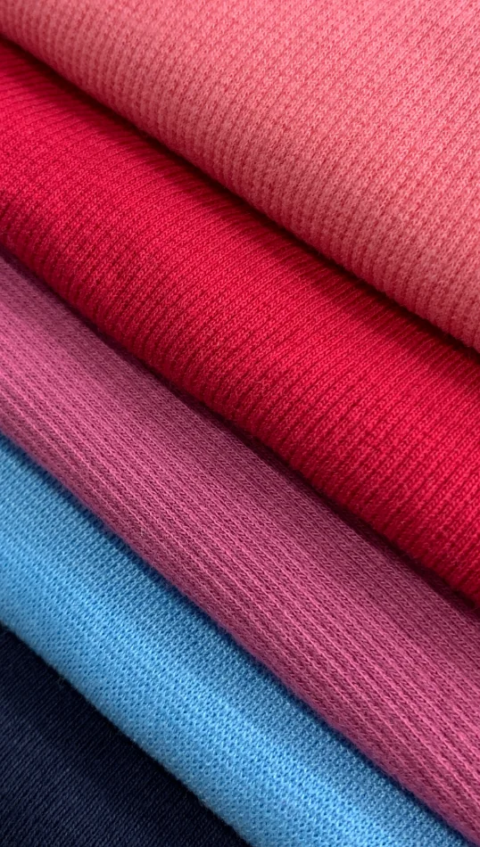
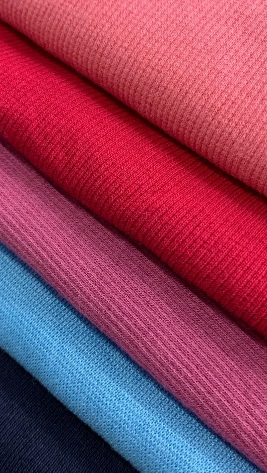
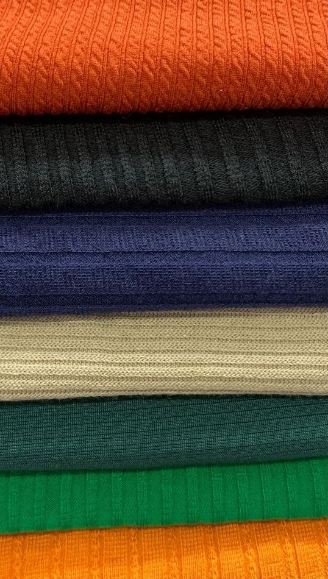


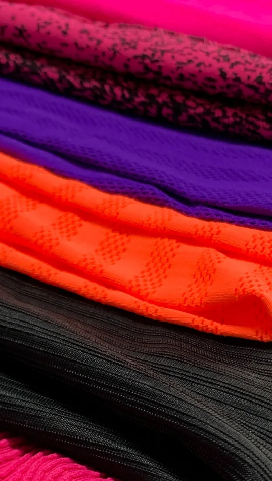


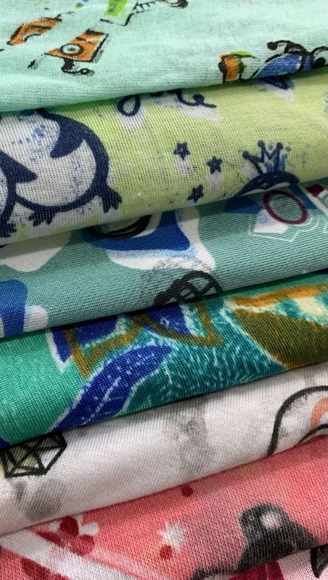

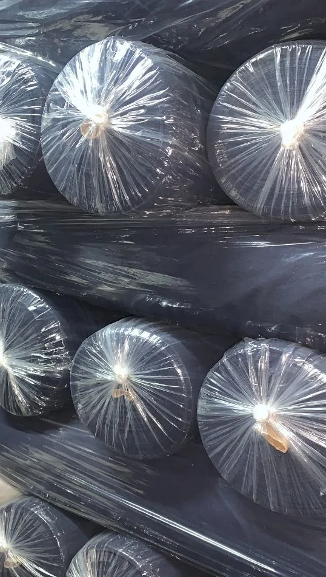
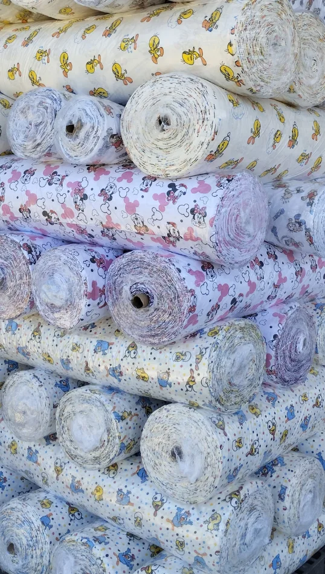
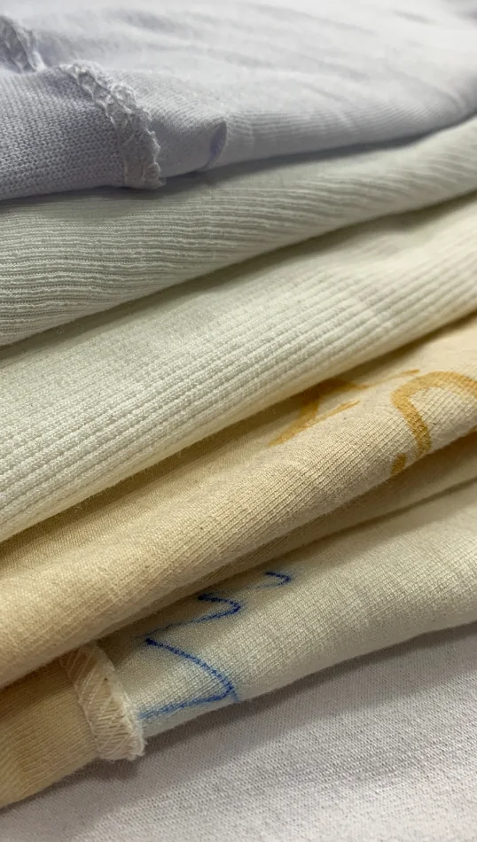
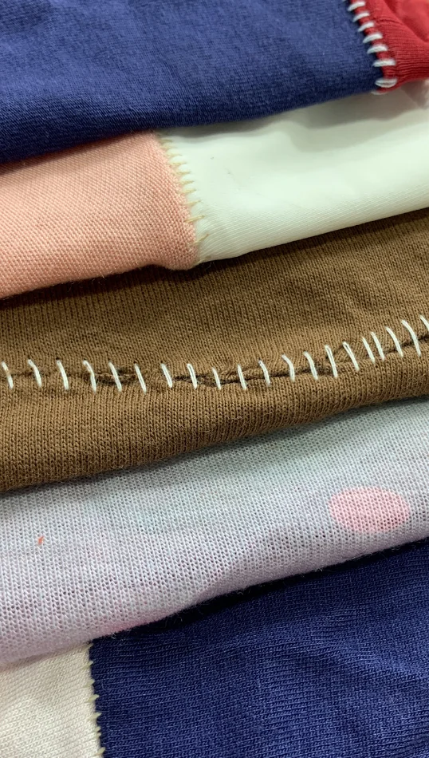
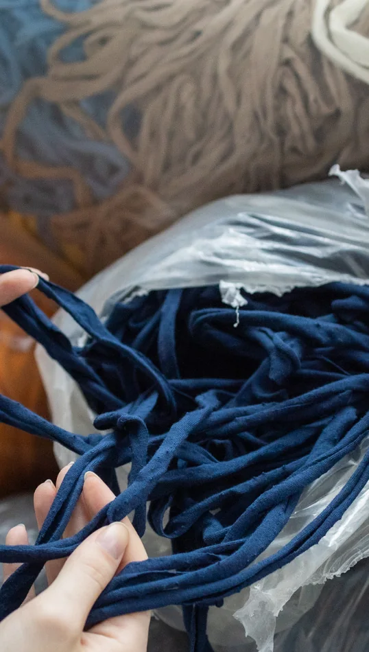
A composição de cores de cada fardo varia conforme a produção da semana. As fotos ilustram o tipo de material, não o lote exato.
Consultar disponibilidade